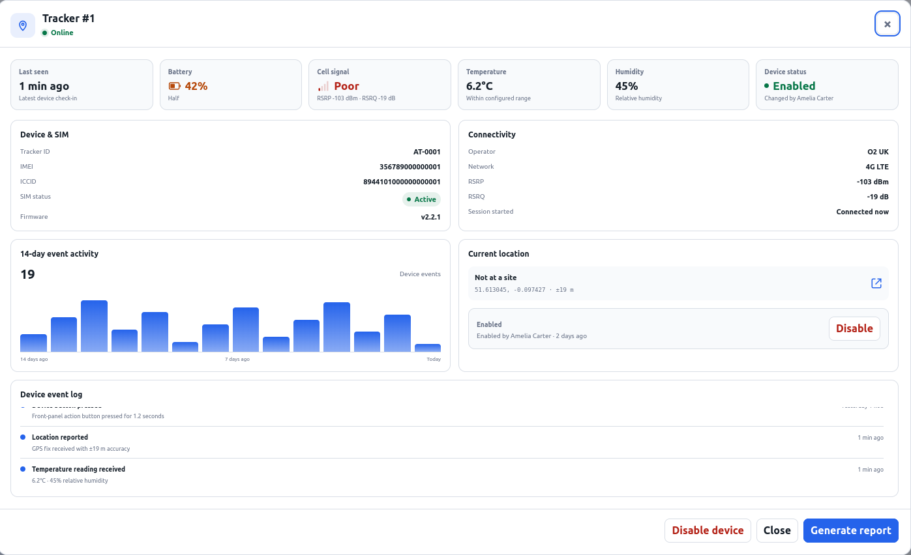
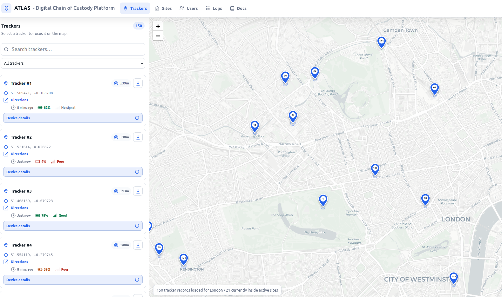

Critical Asset Visibility, Chain of Custody and Audit Solutions
ATLAS helps teams see critical assets now, understand where they have been and retain the evidence needed for accountable operations.
More than dots on a map.
ATLAS connects live status, movement history, resilient tracking and reporting into one operational platform.
Real-time visibility
Know where critical assets are now.
Explore solution →Digital chain of custody
Preserve a continuous movement record.
Explore solution →Audit and reporting
Turn history into usable evidence.
Explore solution →Incident investigation
Reconstruct what happened.
Explore solution →Operational reliability
Keep the record through connectivity gaps.
Explore solution →Reduced coordination
Replace repeated calls with a shared view.
Explore solution →Give operations a live, shared picture.
ATLAS brings each connected asset into one map and dashboard so authorised teams can understand the latest reported location and status without chasing updates across multiple channels.
- Current reported asset location
- Asset status and last-seen information
- Live map and searchable dashboard
- At-a-glance operational exceptions
Know where an asset is, and where it has been.
ATLAS automatically records physical-asset movement over time, creating a permanent operational record that helps organisations demonstrate the journey of a critical item.
- Historical movement and route information
- Asset accountability across locations
- A retained operational record
- Evidence of where an asset has travelled
Turn operational history into defensible evidence.
Historical locations, movements and recorded events can support formal audit trails, evidence gathering, operational review and stakeholder reporting.
- Review movement over a selected time period
- Connect events to assets and authorised users
- Generate focused operational reports
- Export relevant information for further review

Move from a question to a clear sequence of events.
When something unexpected happens, teams can use retained ATLAS history to reconstruct movement and gather the relevant evidence.
- 01Incident
Record the question or exception that needs review.
- 02Select asset
Open the relevant tracker and identify the time period.
- 03Review history
Examine recorded locations and operational events.
- 04Understand movement
Build a chronological account of the asset journey.
- 05Export evidence
Create a focused record for the investigation or review.
Designed for real operations, not consumer convenience.
ATLAS combines purpose-built hardware and software as one platform. Multi-network connectivity is designed to improve resilience when assets move between coverage areas.
If connectivity is temporarily lost, location information can be retained and uploaded once a connection returns—helping preserve continuity in the operational record.
Designed to improve the opportunity to connect across available mobile networks.
Location information can be stored during a temporary service gap and uploaded when connectivity returns.
Tracker, connectivity, dashboard and reporting work as parts of the same operational system.

Let visibility replace repetitive check-ins.
Automatic asset visibility can reduce the need for operations staff to repeatedly call individuals for location updates. Everyone with the right access can work from the same latest information.
- Fewer routine status calls
- Less duplicated manual recording
- Faster recognition of exceptions
- A consistent view across the team
Every layer contributes to the operational record.
The value of ATLAS comes from the complete path between the physical asset and the evidence a team can use.
See ATLAS in action.
Explore how live visibility, movement history and reporting come together around your critical assets.